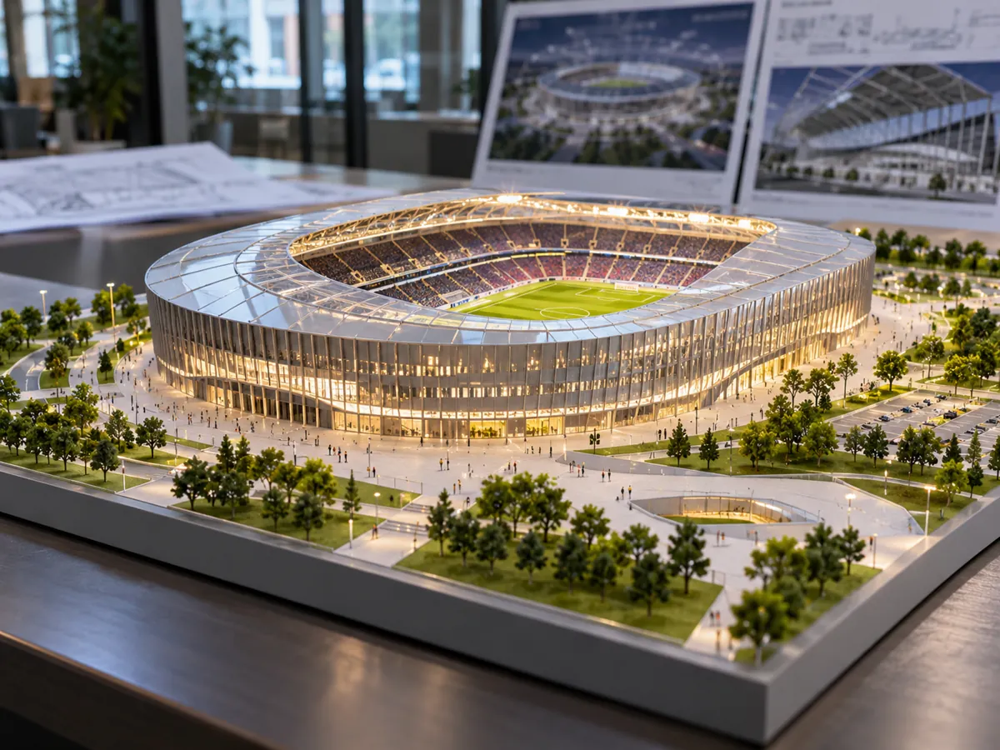

Строительство, инженерия, архитектура — в одном объединении
Выберите направление и расскажите о задаче. Под конкретный проект МосПромСтрой объединяет профильные строительные, инженерные и производственные компетенции.
Наши направления

Быстровозводимые здания
Промышленные и складские корпуса, металлоконструкции
Подробнее ↗
3D-сканирование
БПЛА, наземная съёмка и цифровые модели
Подробнее ↗Изготовление и поставка бетона
Условия поставок и комплектация по запросу
Подробнее ↗
Дом твоей мечты
Дома под ключ, индивидуальная архитектура
Подробнее ↗
Демонтаж сооружений
Подготовка площадок и планирование демонтажа
Подробнее ↗
Дизайн помещений
Квартиры, дома, рестораны, общественные пространства
Подробнее ↗
Архитектурные 3D-макеты
Выставочные макеты зданий, районов, стадионов
Подробнее ↗
Промышленное строительство
Производственные корпуса, склады и логистические комплексы
Подробнее ↗Один проект. Несколько компетенций. Единая координация.
Для сложного объекта могут понадобиться проектировщики, производители, инженерные и строительные компании. МосПромСтрой формирует состав участников под задачу и организует взаимодействие по согласованному плану.
Вашей специализации есть место в совместных проектах
Работаете в строительстве, инженерии, проектировании или производстве? Приходите со своей задачей — обсудим, какие возможности может открыть сотрудничество.